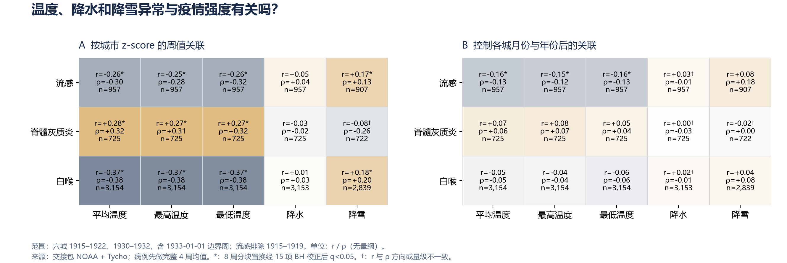

方法：病例先做完整 4 周滚动均值；气象周值与病例在各城内 z-score，成对排除 NA。流感整段排除 1915–1919。Pearson 为主、Spearman 为对照。* 表示 8 周分块置换（999 次）经 15 项 BH 校正后 q<0.05。
降水/降雪：降水：三病种主分析及调整后均未见校正后显著关联。降雪：流感、白喉主分析为弱正相关，但控制月份/年份后证据减弱；脊灰的 Pearson 与 Spearman 量级不同，不作稳定结论。
解释边界：主图 A 的周值关联仍含季节性；B 控制各城月份与年份。†表示r与ρ方向或量级不同。流感温度关联的量级对log1p敏感。结果仅为统计关联，不能据此推断因果。
质量与交接：降水缺 1 周，降雪缺 338 城市周，均未补零；提供站数/天数筛选、人口与 log1p、前后一周、边界周对照。六城映射与站距已补齐；降水/雪为站内有效日均后跨站平均，单位有样本证据，原导出配置仍待补。